ECON_OX 112 · FALL 2026
Return to the places, evidence, and ideas we explored in class.
Choose the United States or the World, then open an example. Expand explanations, examine the class figures, and try an optional question. The sources and data are available if you want to go further. This review is ungraded.
United States · World · Concepts and models · Review paths · All examples
Country-level data and research. The factory-worker study does not identify individual Midwest factory locations.
This place appears in comparisons; the case titles identify the main example.
This place appears in comparisons; the case titles identify the main example.
These examples do not require a geographic location.
Open an example to see its explanation, class material, question, and sources.
Models · Fictional classroom economy
Wakanda let us isolate an economic problem: limited resources can produce different combinations of goods. The production possibilities frontier describes those choices. Moving along it changes the allocation of existing resources; moving the frontier changes productive capacity. The numbers describe an invented economy, so we can focus on the model.
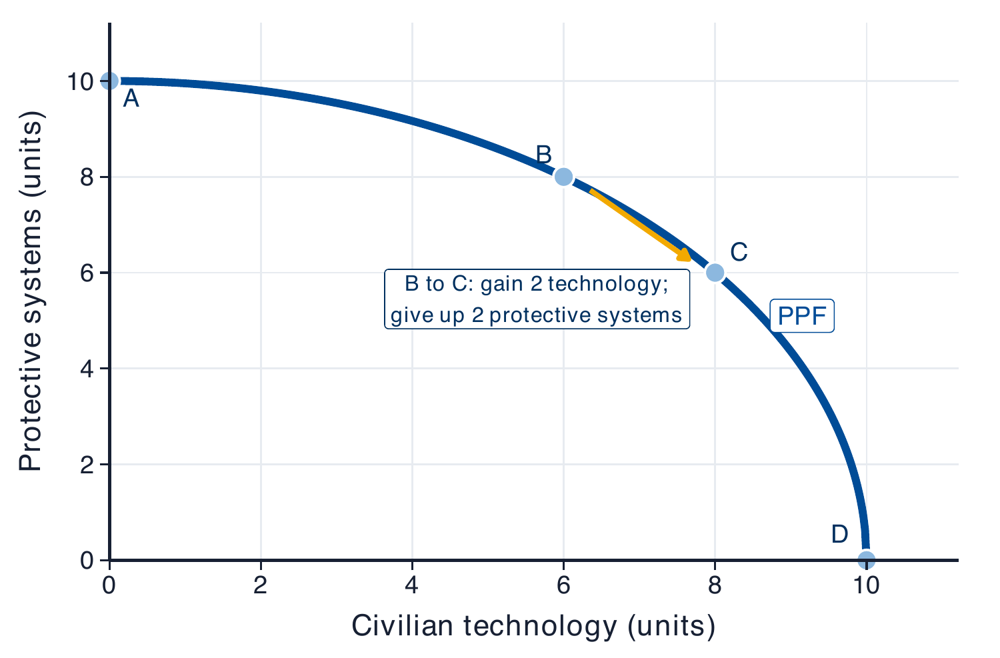
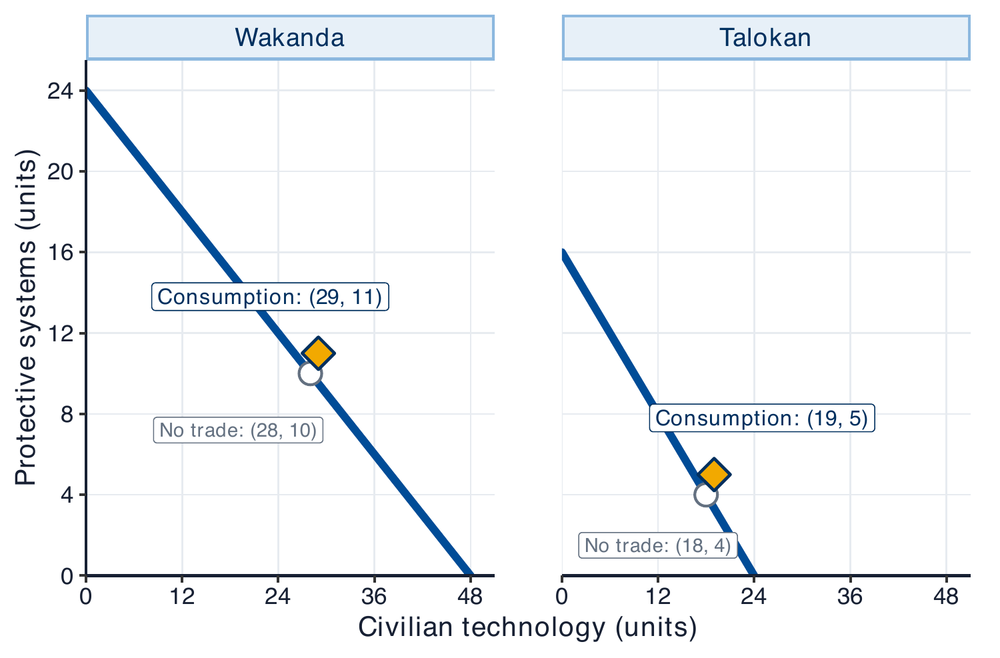
Read the two goods on the axes. Points on the frontier are feasible and productively efficient; points inside leave capacity unused. Opportunity cost is the output forgone when one good increases.
Connect to the concept: Comparative advantage depends on opportunity cost, not simply who can produce more.
An economy moves along an unchanged PPF to produce more of one good. What happens to the other good on a downward-sloping frontier?
Answer: A. Its output falls.
Moving along a downward-sloping frontier trades one output for another. It does not by itself change prices or expand capacity.
models, slide 6; models, slide 7; models, slide 10; models, slide 18; models, slide 20
Connect with: Different long-run growth paths · AI and the production function
Models · 1954
The 1954 World Cup final in Bern gives us an opening question about predictions. An outcome can surprise observers without proving that every useful model is worthless. Economic models simplify a situation, making assumptions that help us explain a mechanism and understand why outcomes can differ from expectations.
The historical images establish the setting. They are not economic data or a test of a statistical model. The event took place in Switzerland; West Germany and Hungary were the teams.
Connect to the concept: Evaluate a model by its assumptions, purpose, and evidence.
What is the strongest conclusion from a surprising outcome?
Answer: B. A prediction needs to be evaluated with its assumptions and uncertainty.
A surprising result invites examination of the prediction and its uncertainty; it does not establish a universal verdict on modeling.
Connect with: Wakanda: scarcity, opportunity cost, and trade · Different long-run growth paths
Growth · 1997–98; long-run comparison 1960–2024
South Korea’s financial crisis interrupted a much longer expansion in output per person. The gold-collection campaign is a memorable part of the response, but the wider explanation includes foreign-currency debt, financing difficulties, restructuring, and recovery. This case connects short-run fluctuations with the productive capacity that supports growth over decades.
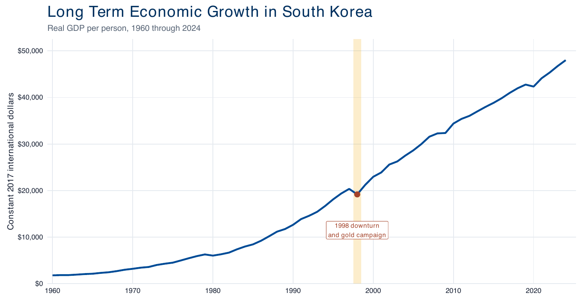
Follow real GDP per person over time. A recession is a decline over part of the path; sustained growth concerns the longer trajectory. The campaign photograph illustrates a response, not the size of its causal contribution.
Connect to the concept: Recovery toward previous output and long-run growth are different processes.
Output falls sharply and then returns to its previous level. What does that return show most directly?
Answer: C. Recovery from the contraction.
Returning to a prior output level is recovery. It alone does not establish a higher long-run productivity trend.
macro, slide 5; macro, slide 6; macro, slide 7; macro, slide 12; macro, slide 20; macro, slide 21
| year | gdp per person |
|---|---|
| 1960 | 1799 |
| 1961 | 1853 |
| 1962 | 1857 |
| 1963 | 1957 |
| 1964 | 2072 |
| 1965 | 2149 |
| 1966 | 2329 |
| 1967 | 2464 |
| 1968 | 2705 |
| 1969 | 3006 |
| 1970 | 3210 |
| 1971 | 3449 |
Showing the first 12 of 65 observations. Download the CSV for the full selected series.
Connect with: Argentina: long-run divergence and crisis · East Asia, Latin America, and Africa
Output & prices · 2022 market event; separate government impact estimate
The BTS/HYBE example separates company news, financial-market prices, and production. A share price reflects investors’ views about future returns. GDP measures current production. Cultural exports may affect several industries, but an estimated spillover is a model-based calculation, not the same thing as an observed fall in a stock price.
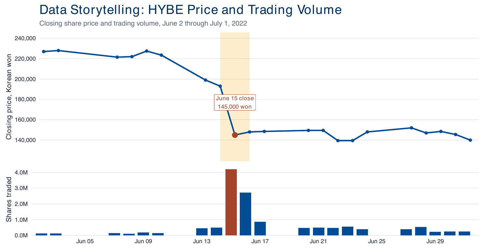
Read the HYBE price and trading-volume series using their own axes. The government economic-impact estimate is separate evidence with separate assumptions. A dollar lost in market valuation is not automatically a dollar lost in GDP.
Connect to the concept: Asset prices and the value of newly produced goods and services are different quantities.
HYBE’s share price falls after news about BTS. Which statement follows directly?
Answer: D. Investors now trade the shares at a lower price.
A share-price movement directly establishes a change in the market price of that asset. Additional evidence is needed for effects on production or jobs.
macro, slide 29; macro, slide 30; macro, slide 31
| date | close krw | volume |
|---|---|---|
| 2022-06-02 | 227000 | 137833 |
| 2022-06-03 | 228000 | 137854 |
| 2022-06-07 | 221500 | 146529 |
| 2022-06-08 | 222000 | 102544 |
| 2022-06-09 | 227500 | 196150 |
| 2022-06-10 | 223500 | 160657 |
| 2022-06-13 | 199000 | 454935 |
| 2022-06-14 | 193000 | 499366 |
| 2022-06-15 | 145000 | 4212828 |
| 2022-06-16 | 148000 | 2713956 |
| 2022-06-17 | 148500 | 879832 |
| 2022-06-20 | 149500 | 489287 |
Showing the first 12 of 21 observations. Download the CSV for the full selected series.
Connect with: Denmark: pharmaceuticals and measured GDP · U.S. GDP and consumer-price data
Output & prices · Great Depression; postwar policy; Volcker disinflation
The Great Depression and the Volcker disinflation illustrate different macroeconomic policy problems. During a deep contraction, weak spending and financial disruption can leave resources idle. Reducing entrenched inflation can also involve a period of weak output and high unemployment. The policy objective and the economic conditions matter for the mechanism.
Read the dated accounts as historical explanations. They do not isolate a controlled effect of one person or policy. National evidence belongs at the U.S. level, not at the location of the Federal Reserve’s offices.
Connect to the concept: Stabilization addresses fluctuations around productive capacity.
Why is the Volcker episode relevant to stabilization policy?
Answer: A. Reducing inflation can involve short-run output and employment costs.
Disinflation can involve weaker demand and employment. It means slower price growth, not necessarily a falling price level.
macro, slide 14; macro, slide 15; macro, slide 17; macro, slide 18
Connect with: South Korea: crisis, the gold campaign, and recovery · Measuring U.S. unemployment
Output & prices · 1970–2024 GDP; other series have separate windows
The macroeconomic overview compared production, public debt, and life expectancy. Each indicator answers a different question. A country can produce more per person without having the same debt burden or health outcomes as another country. We use these comparisons to see why one national statistic cannot summarize every dimension of living standards.
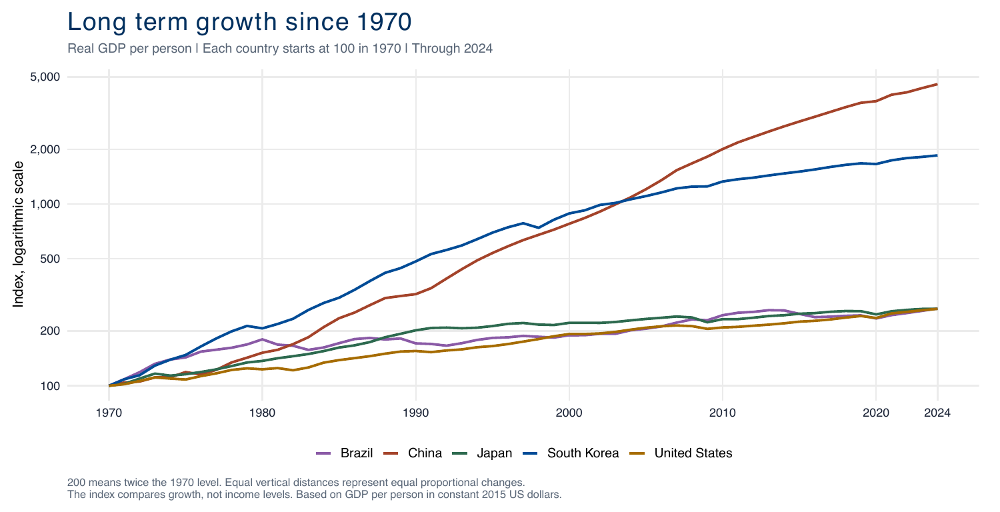
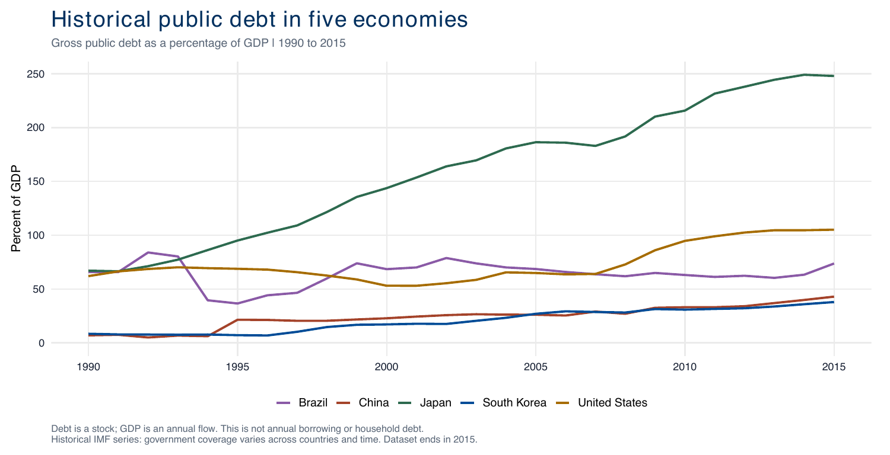
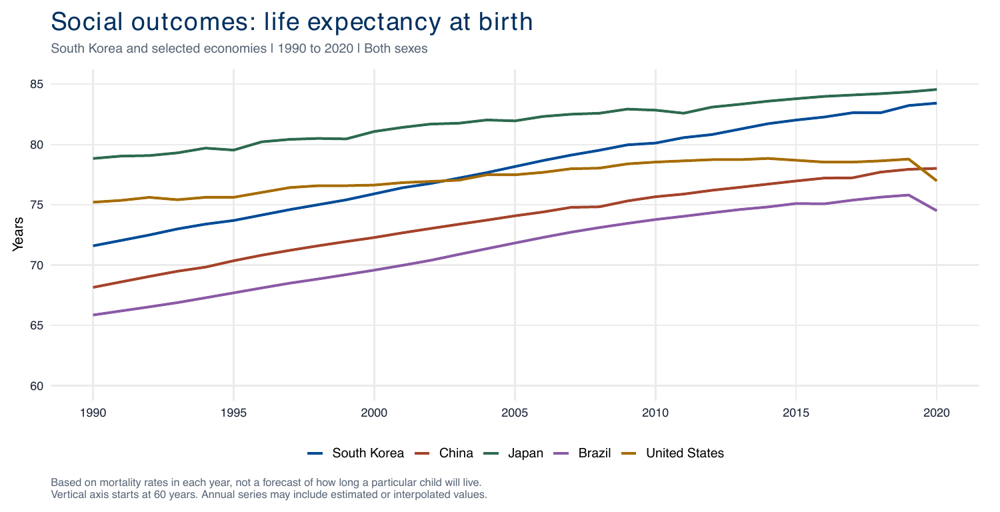
Switch between the three class figures. Keep each unit and time window visible. An index of GDP, a debt-to-GDP ratio, and years of life expectancy cannot be put on one meaningful common numerical scale.
Connect to the concept: Choose an indicator to match the question.
Which indicator directly measures a health outcome rather than production?
Answer: B. Life expectancy, measured in years.
Life expectancy measures years of life. It is a distinct outcome, even when it is considered alongside income.
macro, slide 2; macro, slide 3; macro, slide 4
| code | year | value | country |
|---|---|---|---|
| BRA | 1970 | 3595.95086280878 | Brazil |
| BRA | 1971 | 3907.01225977893 | Brazil |
| BRA | 1972 | 4268.38384697753 | Brazil |
| BRA | 1973 | 4748.26246385619 | Brazil |
| BRA | 1974 | 5013.81724730208 | Brazil |
| BRA | 1975 | 5148.9106187339 | Brazil |
| BRA | 1976 | 5543.43637942576 | Brazil |
| BRA | 1977 | 5679.78590996985 | Brazil |
| BRA | 1978 | 5821.49131249962 | Brazil |
| BRA | 1979 | 6069.05474310333 | Brazil |
| BRA | 1980 | 6472.85214591952 | Brazil |
| BRA | 1981 | 6055.09781428103 | Brazil |
Showing the first 12 of 275 observations. Download the CSV for the full selected series.
| code | year | value | country |
|---|---|---|---|
| KOR | 1990 | 8.4 | South Korea |
| KOR | 1991 | 7.81 | South Korea |
| KOR | 1992 | 7.71 | South Korea |
| KOR | 1993 | 7.54 | South Korea |
| KOR | 1994 | 7.7 | South Korea |
| KOR | 1995 | 7.11 | South Korea |
| KOR | 1996 | 6.82 | South Korea |
| KOR | 1997 | 10.25 | South Korea |
| KOR | 1998 | 14.67 | South Korea |
| KOR | 1999 | 16.75 | South Korea |
| KOR | 2000 | 17.11 | South Korea |
| KOR | 2001 | 17.7 | South Korea |
Showing the first 12 of 130 observations. Download the CSV for the full selected series.
| code | year | value | country |
|---|---|---|---|
| BRA | 1990 | 65.862 | Brazil |
| BRA | 1991 | 66.203 | Brazil |
| BRA | 1992 | 66.539 | Brazil |
| BRA | 1993 | 66.892 | Brazil |
| BRA | 1994 | 67.293 | Brazil |
| BRA | 1995 | 67.701 | Brazil |
| BRA | 1996 | 68.108 | Brazil |
| BRA | 1997 | 68.505 | Brazil |
| BRA | 1998 | 68.848 | Brazil |
| BRA | 1999 | 69.211 | Brazil |
| BRA | 2000 | 69.584 | Brazil |
| BRA | 2001 | 69.98 | Brazil |
Showing the first 12 of 155 observations. Download the CSV for the full selected series.
Connect with: U.S. income groups in the world · East Asia, Latin America, and Africa
Output & prices · 2019–2025 saved GDP series; pharmaceutical expansion
Pharmaceutical expansion made an important contribution to Denmark’s measured economic growth. The example links an industry’s activity to national value added. It also raises an accounting question: production arrangements and economic ownership can be more complicated than locating a company’s headquarters or a factory on a map.
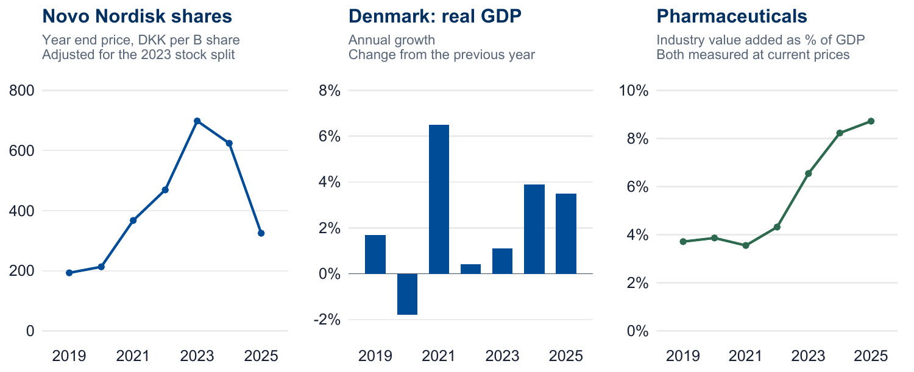
Compare the GDP path and pharmaceutical contribution in the class figure. Keep the saved data vintage and units. A sector’s contribution to growth is different from its total share of GDP or the market value of a company.
Connect to the concept: GDP records production and value added; it is not a company valuation.
A pharmaceutical company’s share price doubles. What can we conclude about Denmark’s GDP from that fact alone?
Answer: C. The GDP effect cannot be determined from the share price alone.
The stock market values claims on future returns. GDP requires evidence about current production and value added.
gdp, slide 2; gdp, slide 3; gdp, slide 4
| year | share price dkk | real gdp growth percent | pharma gva million dkk | gdp billion dkk | pharma gva percent gdp |
|---|---|---|---|---|---|
| 2019 | 193.325 | 1.7 | 85534 | 2303.6 | 3.71305782253864 |
| 2020 | 213.325 | -1.8 | 89925 | 2326.6 | 3.86508209404281 |
| 2021 | 367.5 | 6.5 | 90741 | 2553.3 | 3.55387146046293 |
| 2022 | 469 | 0.4 | 122280 | 2831.3 | 4.31886412601985 |
| 2023 | 698.1 | 1.1 | 181976 | 2781.3 | 6.54283967928666 |
| 2024 | 624 | 3.9 | 245567 | 2985.6 | 8.22504689174705 |
| 2025 | 325 | 3.5 | 271876 | 3118.5 | 8.71816578483245 |
Connect with: Medicine prices: U.S. and international comparisons · U.S. GDP and consumer-price data
Output & prices · Reported prices in September 2024
The medicine-price comparison asked what a quoted price actually measures. A reported list price is not necessarily a patient’s payment, a pharmacy’s transaction price, or a manufacturer’s receipt after rebates. That distinction matters when connecting a news comparison to the consumer price index and to changes in treatment quality.
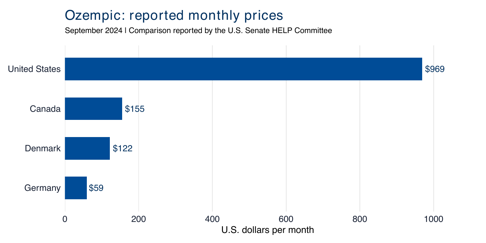
The figure reports selected monthly Ozempic prices from September 2024. Read the source definition before comparing countries. The class discussion concerns price measurement, not which treatment a person should choose.
Connect to the concept: Different price concepts can produce different comparisons.
Which statement best interprets a reported medicine list price?
Answer: D. It is a quoted price that may differ from transaction prices and patient payments.
The list price is a specific price concept. Insurance arrangements, rebates, and transactions can produce different amounts.
gdp, slide 20; gdp, slide 28; gdp, slide 29; gdp, slide 30
| country | medicine | reported monthly price usd | source date |
|---|---|---|---|
| United States | Ozempic | 969 | 2024-09-20 |
| Canada | Ozempic | 155 | 2024-09-20 |
| Denmark | Ozempic | 122 | 2024-09-20 |
| Germany | Ozempic | 59 | 2024-09-20 |
Connect with: U.S. GDP and consumer-price data · Denmark: pharmaceuticals and measured GDP
Output & prices · Use dates and base years in each saved series
GDP and consumer-price data help separate quantities from prices. Nominal GDP uses current prices; real GDP adjusts for price changes. CPI follows consumer purchases, while the GDP deflator covers domestically produced final output. The appropriate measure depends on whether we are studying production, consumer purchasing power, or a particular basket.
An index level is not an inflation rate. Inflation is a percentage change in an index between specified dates. Preserve the index base, frequency, and adjustment status when downloading or comparing series.
Connect to the concept: Match the price index to the economic quantity.
A price index rises from 100 to 105. What is inflation over that interval?
Answer: A. 5%.
Inflation is (105 − 100) / 100 × 100 = 5%. The new index level is 105, not 105% inflation.
gdp, slide 15; gdp, slide 17; gdp, slide 21; gdp, slide 23; gdp, slide 26; gdp, slide 27; inflation, slide 6; inflation, slide 8; inflation, slide 11; inflation, slide 12; inflation, slide 14
| year | value | inflation | series | category |
|---|---|---|---|---|
| 1989 | 123.966666666667 | NA | CPIAUCNS | All items |
| 1990 | 130.658333333333 | 5.3979564399032 | CPIAUCNS | All items |
| 1991 | 136.191666666667 | 4.23496396453855 | CPIAUCNS | All items |
| 1992 | 140.316666666667 | 3.02881967814967 | CPIAUCNS | All items |
| 1993 | 144.458333333333 | 2.95165696638557 | CPIAUCNS | All items |
| 1994 | 148.225 | 2.60744159215458 | CPIAUCNS | All items |
| 1995 | 152.383333333333 | 2.80541968853658 | CPIAUCNS | All items |
| 1996 | 156.85 | 2.93120419993438 | CPIAUCNS | All items |
| 1997 | 160.516666666667 | 2.33768993730741 | CPIAUCNS | All items |
| 1998 | 163.008333333333 | 1.55227909874365 | CPIAUCNS | All items |
| 1999 | 166.575 | 2.18802719697357 | CPIAUCNS | All items |
| 2000 | 172.2 | 3.37685727149932 | CPIAUCNS | All items |
Showing the first 12 of 144 observations. Download the CSV for the full selected series.
Connect with: Brazil: inflation, failed stabilization, and Plano Real · Measuring U.S. unemployment
Inflation · Interwar episode; 1918: empire ends
Austria is one of four interwar cases in the opening inflation comparison. We first read monthly price changes, then add the historical marker to the same graph. That sequence separates the measured pattern from the institutional account used to interpret it. The historical setting matters, but a date on a chart does not by itself identify a single cause.
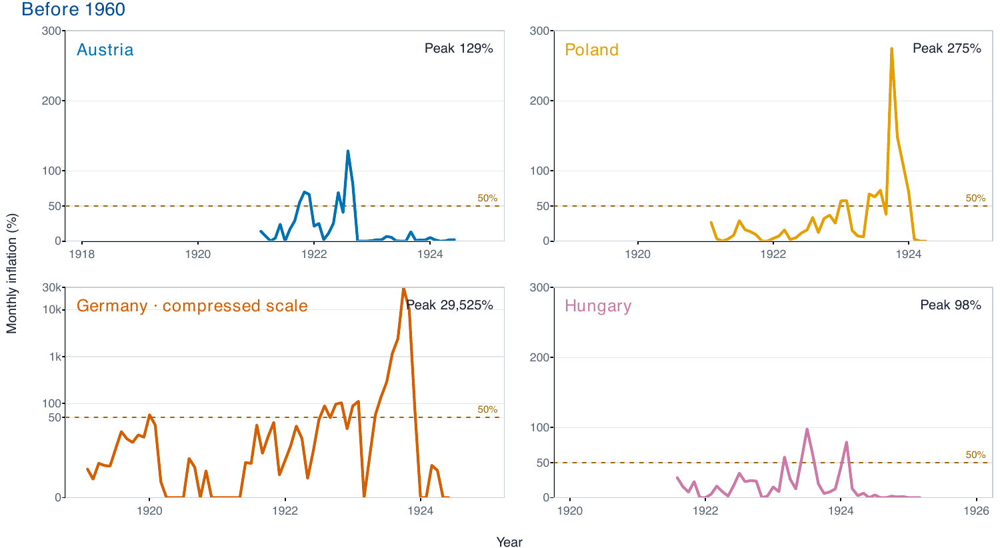
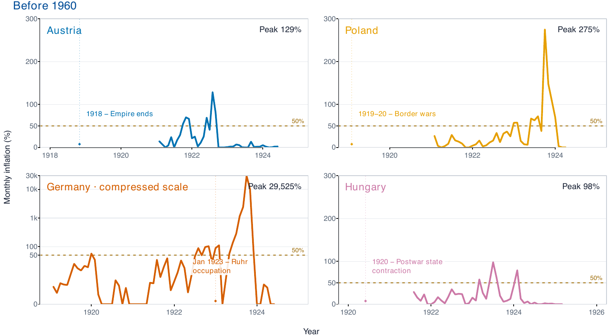
The horizontal axis is calendar time and the vertical axis is monthly inflation. The 50% line is the hyperinflation reference. Germany uses a compressed scale to keep its exceptionally large values visible; equal heights across differently scaled panels are not directly comparable.
Connect to the concept: Read the period and scale before comparing episodes.
What does the 50% reference line measure in these panels?
Answer: B. A 50% monthly inflation rate.
The line marks a monthly inflation threshold. It is neither a price-index level nor an annual inflation measure.
inflation, slide 2; inflation, slide 4
| era | country | date | monthly inflation percent | price index | price measure | source id |
|---|---|---|---|---|---|---|
| Before 1960 | Austria | 1921-02-01 | 14 | 114 | Retail price index, 52 commodities | sargent_1982 |
| Before 1960 | Austria | 1921-03-01 | 7.017544 | 122 | Retail price index, 52 commodities | sargent_1982 |
| Before 1960 | Austria | 1921-04-01 | -4.918033 | 116 | Retail price index, 52 commodities | sargent_1982 |
| Before 1960 | Austria | 1921-05-01 | 4.310345 | 121 | Retail price index, 52 commodities | sargent_1982 |
| Before 1960 | Austria | 1921-06-01 | 23.966942 | 150 | Retail price index, 52 commodities | sargent_1982 |
| Before 1960 | Austria | 1921-07-01 | -4.666667 | 143 | Retail price index, 52 commodities | sargent_1982 |
| Before 1960 | Austria | 1921-08-01 | 16.783217 | 167 | Retail price index, 52 commodities | sargent_1982 |
| Before 1960 | Austria | 1921-09-01 | 28.742515 | 215 | Retail price index, 52 commodities | sargent_1982 |
| Before 1960 | Austria | 1921-10-01 | 54.883721 | 333 | Retail price index, 52 commodities | sargent_1982 |
| Before 1960 | Austria | 1921-11-01 | 69.96997 | 566 | Retail price index, 52 commodities | sargent_1982 |
| Before 1960 | Austria | 1921-12-01 | 66.431095 | 942 | Retail price index, 52 commodities | sargent_1982 |
| Before 1960 | Austria | 1922-01-01 | 21.231423 | 1142 | Retail price index, 52 commodities | sargent_1982 |
Showing the first 12 of 41 observations. Download the CSV for the full selected series.
Connect with: Poland: interwar inflation · Germany: interwar inflation
Inflation · Interwar episode; 1919–20: border wars
Poland is one of four interwar cases in the opening inflation comparison. We first read monthly price changes, then add the historical marker to the same graph. That sequence separates the measured pattern from the institutional account used to interpret it. The historical setting matters, but a date on a chart does not by itself identify a single cause.
The horizontal axis is calendar time and the vertical axis is monthly inflation. The 50% line is the hyperinflation reference. Germany uses a compressed scale to keep its exceptionally large values visible; equal heights across differently scaled panels are not directly comparable.
Connect to the concept: Read the period and scale before comparing episodes.
What does the 50% reference line measure in these panels?
Answer: B. A 50% monthly inflation rate.
The line marks a monthly inflation threshold. It is neither a price-index level nor an annual inflation measure.
inflation, slide 2; inflation, slide 4
| era | country | date | monthly inflation percent | price index | price measure | source id |
|---|---|---|---|---|---|---|
| Before 1960 | Poland | 1921-02-01 | 26.604081 | 31827 | Wholesale price index | sargent_1982 |
| Before 1960 | Poland | 1921-03-01 | 3.314796 | 32882 | Wholesale price index | sargent_1982 |
| Before 1960 | Poland | 1921-04-01 | -3.56426 | 31710 | Wholesale price index | sargent_1982 |
| Before 1960 | Poland | 1921-05-01 | 2.929675 | 32639 | Wholesale price index | sargent_1982 |
| Before 1960 | Poland | 1921-06-01 | 8.434695 | 35392 | Wholesale price index | sargent_1982 |
| Before 1960 | Poland | 1921-07-01 | 28.995253 | 45654 | Wholesale price index | sargent_1982 |
| Before 1960 | Poland | 1921-08-01 | 16.309633 | 53100 | Wholesale price index | sargent_1982 |
| Before 1960 | Poland | 1921-09-01 | 13.376648 | 60203 | Wholesale price index | sargent_1982 |
| Before 1960 | Poland | 1921-10-01 | 8.863346 | 65539 | Wholesale price index | sargent_1982 |
| Before 1960 | Poland | 1921-11-01 | -10.613528 | 58583 | Wholesale price index | sargent_1982 |
| Before 1960 | Poland | 1921-12-01 | -2.623628 | 57046 | Wholesale price index | sargent_1982 |
| Before 1960 | Poland | 1922-01-01 | 3.830242 | 59231 | Wholesale price index | sargent_1982 |
Showing the first 12 of 39 observations. Download the CSV for the full selected series.
Connect with: Austria: interwar inflation · Hungary: interwar inflation
Inflation · Interwar episode; January 1923: Ruhr occupation
Germany is one of four interwar cases in the opening inflation comparison. We first read monthly price changes, then add the historical marker to the same graph. That sequence separates the measured pattern from the institutional account used to interpret it. The historical setting matters, but a date on a chart does not by itself identify a single cause.
The horizontal axis is calendar time and the vertical axis is monthly inflation. The 50% line is the hyperinflation reference. Germany uses a compressed scale to keep its exceptionally large values visible; equal heights across differently scaled panels are not directly comparable.
Connect to the concept: Read the period and scale before comparing episodes.
What does the 50% reference line measure in these panels?
Answer: B. A 50% monthly inflation rate.
The line marks a monthly inflation threshold. It is neither a price-index level nor an annual inflation measure.
inflation, slide 2; inflation, slide 4
| era | country | date | monthly inflation percent | price index | price measure | source id |
|---|---|---|---|---|---|---|
| Before 1960 | Germany | 1919-02-01 | 3.053435 | 270 | Wholesale price index | sargent_1982 |
| Before 1960 | Germany | 1919-03-01 | 1.481481 | 274 | Wholesale price index | sargent_1982 |
| Before 1960 | Germany | 1919-04-01 | 4.379562 | 286 | Wholesale price index | sargent_1982 |
| Before 1960 | Germany | 1919-05-01 | 3.846154 | 297 | Wholesale price index | sargent_1982 |
| Before 1960 | Germany | 1919-06-01 | 3.703704 | 308 | Wholesale price index | sargent_1982 |
| Before 1960 | Germany | 1919-07-01 | 10.064935 | 339 | Wholesale price index | sargent_1982 |
| Before 1960 | Germany | 1919-08-01 | 24.483776 | 422 | Wholesale price index | sargent_1982 |
| Before 1960 | Germany | 1919-09-01 | 16.824645 | 493 | Wholesale price index | sargent_1982 |
| Before 1960 | Germany | 1919-10-01 | 13.995943 | 562 | Wholesale price index | sargent_1982 |
| Before 1960 | Germany | 1919-11-01 | 20.640569 | 678 | Wholesale price index | sargent_1982 |
| Before 1960 | Germany | 1919-12-01 | 18.436578 | 803 | Wholesale price index | sargent_1982 |
| Before 1960 | Germany | 1920-01-01 | 56.911582 | 1260 | Wholesale price index | sargent_1982 |
Showing the first 12 of 65 observations. Download the CSV for the full selected series.
Connect with: Zimbabwe: extreme monthly inflation · Brazil: inflation, failed stabilization, and Plano Real
Inflation · Interwar episode; 1920: postwar state contraction
Hungary is one of four interwar cases in the opening inflation comparison. We first read monthly price changes, then add the historical marker to the same graph. That sequence separates the measured pattern from the institutional account used to interpret it. The historical setting matters, but a date on a chart does not by itself identify a single cause.
The horizontal axis is calendar time and the vertical axis is monthly inflation. The 50% line is the hyperinflation reference. Germany uses a compressed scale to keep its exceptionally large values visible; equal heights across differently scaled panels are not directly comparable.
Connect to the concept: Read the period and scale before comparing episodes.
What does the 50% reference line measure in these panels?
Answer: B. A 50% monthly inflation rate.
The line marks a monthly inflation threshold. It is neither a price-index level nor an annual inflation measure.
inflation, slide 2; inflation, slide 4
| era | country | date | monthly inflation percent | price index | price measure | source id |
|---|---|---|---|---|---|---|
| Before 1960 | Hungary | 1921-08-01 | 28.571429 | 5400 | Retail index through Nov. 1923; wholesale thereafter | sargent_1982 |
| Before 1960 | Hungary | 1921-09-01 | 15.740741 | 6250 | Retail index through Nov. 1923; wholesale thereafter | sargent_1982 |
| Before 1960 | Hungary | 1921-10-01 | 8 | 6750 | Retail index through Nov. 1923; wholesale thereafter | sargent_1982 |
| Before 1960 | Hungary | 1921-11-01 | 22.962963 | 8300 | Retail index through Nov. 1923; wholesale thereafter | sargent_1982 |
| Before 1960 | Hungary | 1921-12-01 | -0.60241 | 8250 | Retail index through Nov. 1923; wholesale thereafter | sargent_1982 |
| Before 1960 | Hungary | 1922-01-01 | -1.818182 | 8100 | Retail index through Nov. 1923; wholesale thereafter | sargent_1982 |
| Before 1960 | Hungary | 1922-02-01 | 4.938272 | 8500 | Retail index through Nov. 1923; wholesale thereafter | sargent_1982 |
| Before 1960 | Hungary | 1922-03-01 | 16.470588 | 9900 | Retail index through Nov. 1923; wholesale thereafter | sargent_1982 |
| Before 1960 | Hungary | 1922-04-01 | 8.585859 | 10750 | Retail index through Nov. 1923; wholesale thereafter | sargent_1982 |
| Before 1960 | Hungary | 1922-05-01 | 2.325581 | 11000 | Retail index through Nov. 1923; wholesale thereafter | sargent_1982 |
| Before 1960 | Hungary | 1922-06-01 | 17.272727 | 12900 | Retail index through Nov. 1923; wholesale thereafter | sargent_1982 |
| Before 1960 | Hungary | 1922-07-01 | 34.883721 | 17400 | Retail index through Nov. 1923; wholesale thereafter | sargent_1982 |
Showing the first 12 of 44 observations. Download the CSV for the full selected series.
Connect with: Austria: interwar inflation · Poland: interwar inflation
Inflation · 1972–75; September 1973 coup
Chile’s panel places a monthly inflation path beside the September 1973 military coup. Inflation had already accelerated before the coup. The comparison makes chronology useful: a turning point can intensify or change an existing process rather than mark its beginning.
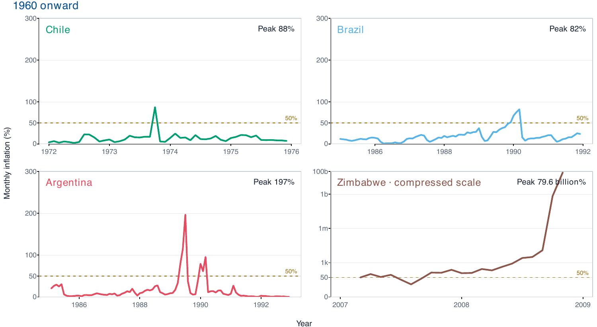
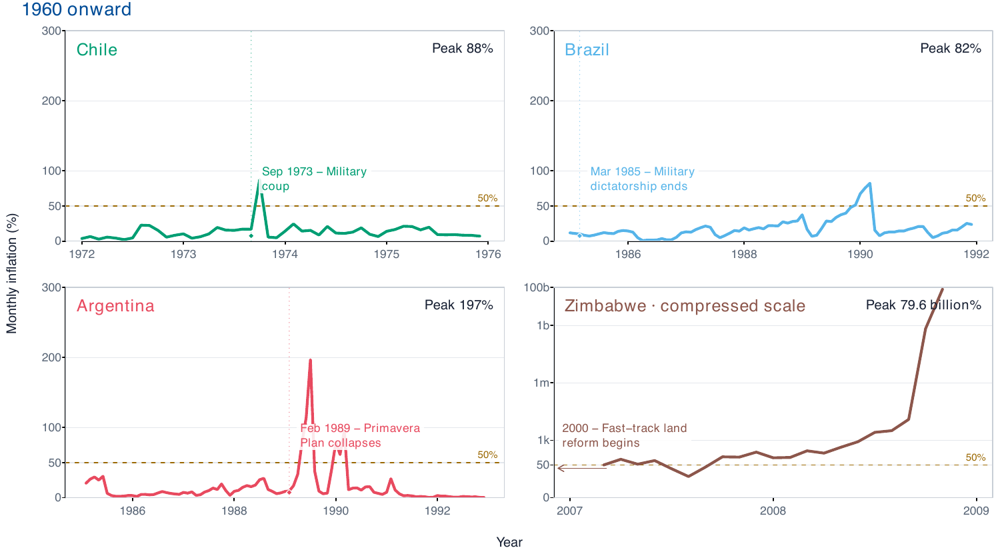
Switch between the inflation series and the version with institutional markers. The geometry stays the same, so the added information is historical context. The chart alone cannot separate fiscal, monetary, and political contributions.
Connect to the concept: Sequence is evidence about timing, not a complete causal explanation.
Inflation was already rising before a marked political event. Which conclusion is justified?
Answer: C. The rise began before that event.
The chronology supports the timing statement. It does not prove either no effect or a complete causal explanation.
inflation, slide 3; inflation, slide 5
| era | country | date | monthly inflation percent | price index | price measure | source id |
|---|---|---|---|---|---|---|
| 1960 onward | Chile | 1972-01-01 | 3.648655 | 0.000902185753463675 | Headline consumer price index | world_bank_gdoi |
| 1960 onward | Chile | 1972-02-01 | 6.453727 | 0.000960410360389287 | Headline consumer price index | world_bank_gdoi |
| 1960 onward | Chile | 1972-03-01 | 2.755669 | 0.000986876090810019 | Headline consumer price index | world_bank_gdoi |
| 1960 onward | Chile | 1972-04-01 | 5.661519 | 0.00104274827206027 | Headline consumer price index | world_bank_gdoi |
| 1960 onward | Chile | 1972-05-01 | 4.2301 | 0.00108685757167539 | Headline consumer price index | world_bank_gdoi |
| 1960 onward | Chile | 1972-06-01 | 2.11037 | 0.00110979428695392 | Headline consumer price index | world_bank_gdoi |
| 1960 onward | Chile | 1972-07-01 | 4.451496 | 0.00115919673265319 | Headline consumer price index | world_bank_gdoi |
| 1960 onward | Chile | 1972-08-01 | 22.729594 | 0.00142267744739368 | Headline consumer price index | world_bank_gdoi |
| 1960 onward | Chile | 1972-09-01 | 22.199261 | 0.00173850132824223 | Headline consumer price index | world_bank_gdoi |
| 1960 onward | Chile | 1972-10-01 | 15.257098 | 0.00200374617392467 | Headline consumer price index | world_bank_gdoi |
| 1960 onward | Chile | 1972-11-01 | 5.606132 | 0.00211607883115858 | Headline consumer price index | world_bank_gdoi |
| 1960 onward | Chile | 1972-12-01 | 8.337967 | 0.00229251678287736 | Headline consumer price index | world_bank_gdoi |
Showing the first 12 of 48 observations. Download the CSV for the full selected series.
Connect with: Brazil: inflation, failed stabilization, and Plano Real · Argentina: the 1989 inflation episode
Inflation · 1985–96; URV March–June 1994; real July 1; World Cup July 17
Brazil’s sequence connects repeated stabilization attempts with the Plano Real. A common unit of account, the URV, helped coordinate price quotations while payments still used the old currency. The real then entered circulation. This was more than changing the number of zeros: the important outcome was a sustained slowdown in price increases.
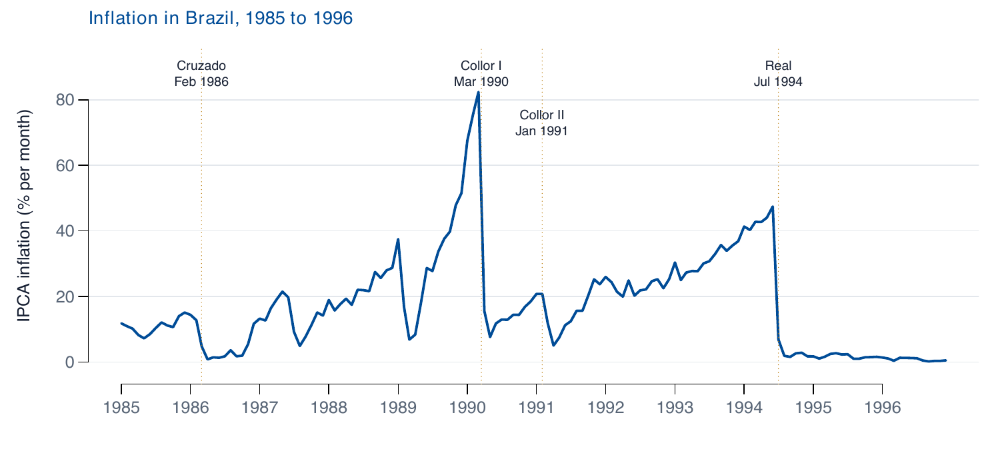
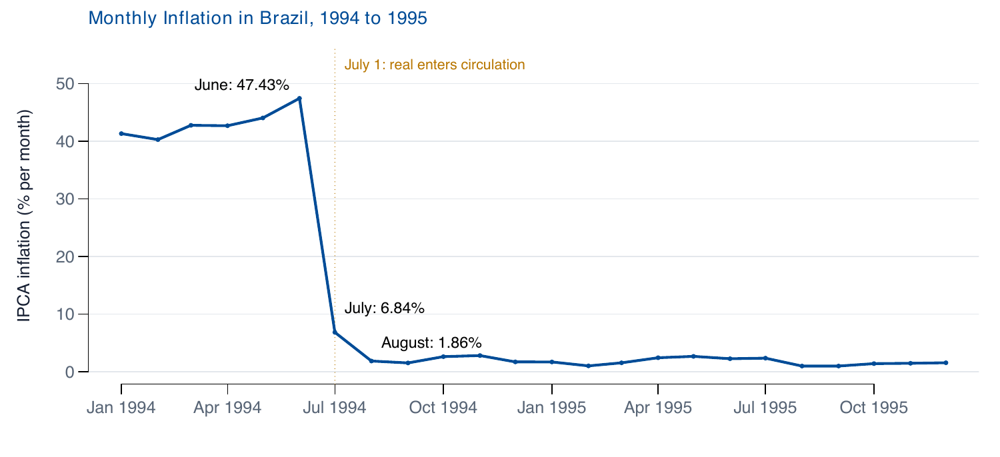
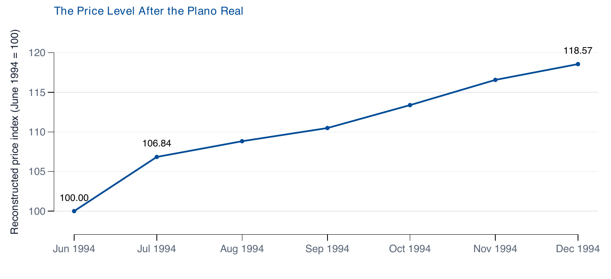
Compare monthly inflation with the price-level figure. Lower inflation can coexist with a still-rising price level. The 10-URV basket is a fictional calculation used to explain conversion; the inflation charts use actual data.
Connect to the concept: A currency conversion and disinflation are different changes.
Monthly inflation falls from 20% to 2%, while remaining positive. What happens to the price level?
Answer: D. It continues to rise, more slowly.
Positive inflation means a rising price level. A lower positive rate is disinflation, not deflation.
inflation, slide 3; inflation, slide 5; inflation, slide 18; inflation, slide 19; inflation, slide 20; inflation, slide 27; inflation, slide 28; inflation, slide 29; inflation, slide 30
| month | ipca monthly percent |
|---|---|
| 1985-01-01 | 11.76 |
| 1985-02-01 | 10.87 |
| 1985-03-01 | 10.16 |
| 1985-04-01 | 8.20 |
| 1985-05-01 | 7.20 |
| 1985-06-01 | 8.49 |
| 1985-07-01 | 10.31 |
| 1985-08-01 | 12.05 |
| 1985-09-01 | 11.12 |
| 1985-10-01 | 10.62 |
| 1985-11-01 | 13.97 |
| 1985-12-01 | 15.07 |
Showing the first 12 of 144 observations. Download the CSV for the full selected series.
| month | ipca monthly percent | price index |
|---|---|---|
| 1994-06-01 | 47.43 | 100 |
| 1994-07-01 | 6.84 | 106.84 |
| 1994-08-01 | 1.86 | 108.827224 |
| 1994-09-01 | 1.53 | 110.4922805272 |
| 1994-10-01 | 2.62 | 113.387178277013 |
| 1994-11-01 | 2.81 | 116.573357986597 |
| 1994-12-01 | 1.71 | 118.566762408168 |
Connect with: Brazil: unemployment rises while claims fall · A house and a fixed nominal mortgage
Inflation · 1985–92; February 1989 Primavera collapse
Argentina’s 1989 inflation episode follows the breakdown of a stabilization attempt. It belongs to the history of inflation and policy credibility, but it is not the same event as the 2001–02 currency, banking, and debt crisis discussed in the growth lecture. Keeping dates separate prevents one crisis from becoming an explanation for everything.
Read monthly inflation in the 1985–92 window and locate the February 1989 marker. The panel describes price changes, not the long-run GDP-per-person comparison.
Connect to the concept: Identify the event and the outcome before proposing an explanation.
Why should the 1989 inflation episode and the 2001–02 crisis have separate timelines?
Answer: A. They are distinct episodes with different immediate contexts.
Separate dates and mechanisms are necessary to connect the correct evidence to each episode.
inflation, slide 3; inflation, slide 5
| era | country | date | monthly inflation percent | price index | price measure | source id |
|---|---|---|---|---|---|---|
| 1960 onward | Argentina | 1985-02-01 | 20.698408 | 0.00072273 | Linked historical CPI, Greater Buenos Aires | argentina_datos |
| 1960 onward | Argentina | 1985-03-01 | 26.478768 | 0.0009141 | Linked historical CPI, Greater Buenos Aires | argentina_datos |
| 1960 onward | Argentina | 1985-04-01 | 29.474893 | 0.00118353 | Linked historical CPI, Greater Buenos Aires | argentina_datos |
| 1960 onward | Argentina | 1985-05-01 | 25.085127 | 0.00148042 | Linked historical CPI, Greater Buenos Aires | argentina_datos |
| 1960 onward | Argentina | 1985-06-01 | 30.535929 | 0.00193248 | Linked historical CPI, Greater Buenos Aires | argentina_datos |
| 1960 onward | Argentina | 1985-07-01 | 6.187386 | 0.00205205 | Linked historical CPI, Greater Buenos Aires | argentina_datos |
| 1960 onward | Argentina | 1985-08-01 | 3.073025 | 0.00211511 | Linked historical CPI, Greater Buenos Aires | argentina_datos |
| 1960 onward | Argentina | 1985-09-01 | 1.992804 | 0.00215726 | Linked historical CPI, Greater Buenos Aires | argentina_datos |
| 1960 onward | Argentina | 1985-10-01 | 1.939034 | 0.00219909 | Linked historical CPI, Greater Buenos Aires | argentina_datos |
| 1960 onward | Argentina | 1985-11-01 | 2.370981 | 0.00225123 | Linked historical CPI, Greater Buenos Aires | argentina_datos |
| 1960 onward | Argentina | 1985-12-01 | 3.175597 | 0.00232272 | Linked historical CPI, Greater Buenos Aires | argentina_datos |
| 1960 onward | Argentina | 1986-01-01 | 3.024041 | 0.00239296 | Linked historical CPI, Greater Buenos Aires | argentina_datos |
Showing the first 12 of 95 observations. Download the CSV for the full selected series.
Connect with: Argentina: long-run divergence and crisis · Brazil: inflation, failed stabilization, and Plano Real
Inflation · 2000 marker; 2007–08 inflation
Zimbabwe’s extreme inflation illustrates how quickly repeated monthly price increases can erode the usefulness of money. The class graph includes a historical marker for the start of fast-track land reform in 2000 and later inflation observations. At the end of the series, researchers supplement official price statistics with estimates based on purchasing-power relationships.
The vertical axis is compressed because the peak is many orders of magnitude larger than the other cases. Tick labels still report actual monthly percentages. Official CPI and later research estimates have different provenance.
Connect to the concept: Scale and source changes matter when reading extreme observations.
Why does the Zimbabwe panel use a compressed vertical scale?
Answer: B. To display enormously different magnitudes in a readable panel.
Compression makes very large magnitudes visible while the axis labels retain their units. It does not change the observation frequency.
inflation, slide 3; inflation, slide 5
| era | country | date | monthly inflation percent | price index | price measure | source id |
|---|---|---|---|---|---|---|
| 1960 onward | Zimbabwe | 2007-03-01 | 50.54 | CPI through July 2008; PPP estimate thereafter | hanke_kwok_2009 | |
| 1960 onward | Zimbabwe | 2007-04-01 | 100.7 | CPI through July 2008; PPP estimate thereafter | hanke_kwok_2009 | |
| 1960 onward | Zimbabwe | 2007-05-01 | 55.4 | CPI through July 2008; PPP estimate thereafter | hanke_kwok_2009 | |
| 1960 onward | Zimbabwe | 2007-06-01 | 86.2 | CPI through July 2008; PPP estimate thereafter | hanke_kwok_2009 | |
| 1960 onward | Zimbabwe | 2007-07-01 | 31.6 | CPI through July 2008; PPP estimate thereafter | hanke_kwok_2009 | |
| 1960 onward | Zimbabwe | 2007-08-01 | 11.8 | CPI through July 2008; PPP estimate thereafter | hanke_kwok_2009 | |
| 1960 onward | Zimbabwe | 2007-09-01 | 38.7 | CPI through July 2008; PPP estimate thereafter | hanke_kwok_2009 | |
| 1960 onward | Zimbabwe | 2007-10-01 | 135.62 | CPI through July 2008; PPP estimate thereafter | hanke_kwok_2009 | |
| 1960 onward | Zimbabwe | 2007-11-01 | 131.42 | CPI through July 2008; PPP estimate thereafter | hanke_kwok_2009 | |
| 1960 onward | Zimbabwe | 2007-12-01 | 240.06 | CPI through July 2008; PPP estimate thereafter | hanke_kwok_2009 | |
| 1960 onward | Zimbabwe | 2008-01-01 | 120.83 | CPI through July 2008; PPP estimate thereafter | hanke_kwok_2009 | |
| 1960 onward | Zimbabwe | 2008-02-01 | 125.86 | CPI through July 2008; PPP estimate thereafter | hanke_kwok_2009 |
Showing the first 12 of 21 observations. Download the CSV for the full selected series.
Connect with: Germany: interwar inflation · Brazil: inflation, failed stabilization, and Plano Real
Inflation · Fictional contract: 8% nominal interest; 5% expected inflation
A buyer purchases a $200,000 house using a $160,000 fixed nominal mortgage at 8%. Both sides initially expect 5% inflation. The house price is fixed at closing, and the fixed nominal contract does not automatically change with later inflation. An indexed contract would use an agreed price index to adjust specified amounts.
Use the chapter’s approximate real-interest formula: nominal interest minus realized inflation. At 6% inflation the real rate is about 2%; at 2% inflation it is about 6%. These are illustrative contract numbers.
Connect to the concept: Unexpected inflation changes the real value of fixed nominal payments.
Using the approximation, what real interest rate results from 8% nominal interest and 6% inflation?
Answer: C. 2%.
The approximate real interest rate is 8% − 6% = 2%. The exact Fisher calculation is different; this question explicitly uses the approximation.
inflation, slide 25; inflation, slide 26
Connect with: Brazil: inflation, failed stabilization, and Plano Real · U.S. GDP and consumer-price data
Labor markets · Workers followed 2000–2019
The factory-worker application follows manufacturing workers exposed to different amounts of Chinese import competition. It separates employment in the original area from employment elsewhere, and manufacturing from other sectors. The evidence lets us ask whether adjustment happened by changing sectors, changing places, or leaving employment.
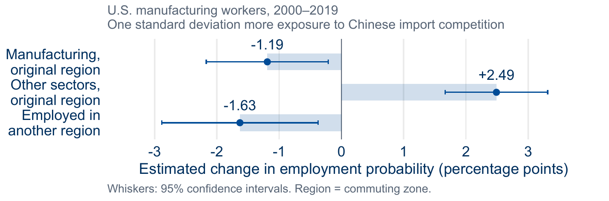
The plotted quantities are estimated percentage-point differences in employment probabilities, with uncertainty intervals. They are not percentages of displaced workers arriving at each destination. The sample is national, even though industrial regions motivate the question.
Connect to the concept: Changing sector is not the same as moving location.
The estimate for other-sector employment in the original area is +2.49 percentage points. What does it describe?
Answer: D. An estimated difference in the probability of that employment outcome.
The outcome is a probability difference associated with the study’s exposure measure. It is not a destination share or a grocery-store estimate.
unemployment, slide 22
| outcome | estimate | standard error | unit | year | exposure | population | source |
|---|---|---|---|---|---|---|---|
| Manufacturing in original region | -1.19 | 0.5 | percentage points | 2019 | one standard deviation higher Chinese import exposure, 2000–2007 | U.S. manufacturing workers in 2000 who remain ages 18–64 | Autor et al., Places versus People, Table A.17 |
| Other sectors in original region | 2.49 | 0.42 | percentage points | 2019 | one standard deviation higher Chinese import exposure, 2000–2007 | U.S. manufacturing workers in 2000 who remain ages 18–64 | Autor et al., Places versus People, Table A.17 |
| Employment in another region | -1.63 | 0.64 | percentage points | 2019 | one standard deviation higher Chinese import exposure, 2000–2007 | U.S. manufacturing workers in 2000 who remain ages 18–64 | Autor et al., Places versus People, Table A.17 |
Connect with: Young adults in Georgia, Michigan, Ohio, and Europe · Unemployment support across countries
Labor markets · 2023 policy rules; U.S. 2022; months 2 and 24
The OECD example asks how much of a qualifying worker’s former net income is retained during unemployment. The comparison shows the second and twenty-fourth months for a specified household. The amount can depend on eligibility, benefit duration, and other support, rather than being a single universal payment to unemployed people.
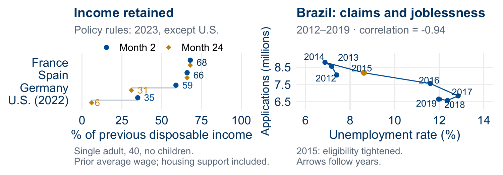
Compare the two time points within a country before comparing countries. France, Spain, and Germany use 2023 policy rules; the U.S. comparison uses 2022. The modeled household and housing-benefit assumptions remain part of the meaning of every percentage.
Housing benefits are included, assuming rent of 20% of the average wage. The months refer to benefit receipt after any waiting period. France, Spain, and Germany use 2023 policy rules; the U.S. uses 2022.
Connect to the concept: A replacement rate compares income out of work with income in work.
What is the denominator of the OECD net replacement rate in this example?
Answer: A. The modeled household’s net income while in work.
The replacement rate divides net income during unemployment by net income while employed for the specified model household.
unemployment, slide 24; unemployment, slide 25
| country | month2 | month24 | policy year |
|---|---|---|---|
| United States | 35 | 6 | 2022 |
| Germany | 59 | 31 | 2023 |
| Spain | 66 | 66 | 2023 |
| France | 68 | 68 | 2023 |
Connect with: Brazil: unemployment rises while claims fall · Young adults in Georgia, Michigan, Ohio, and Europe
Labor markets · 2012–2019; eligibility change in 2015
Brazil’s example shows that more unemployment does not automatically produce more unemployment-insurance applications. Eligibility depends on formal employment histories and program rules. Formal-sector turnover can generate claims during expansion, while a prolonged downturn can leave people outside coverage or without renewed eligibility.
Follow the labeled years in the connected scatter, not only the slope. Applications are different from recipients, approvals, or expenditure. The 2015 eligibility change provides context, but the short descriptive series does not isolate its causal effect.
Connect to the concept: Coverage and turnover affect how support responds over the cycle.
Applications fall while unemployment rises. What is established by these two series?
Answer: B. The two measured variables moved in opposite directions in that period.
The observed association does not establish a causal effect, payments per person, or the behavior of all social spending.
| year | unemployment rate | applications |
|---|---|---|
| 2012 | 7.4 | 8062077 |
| 2013 | 7.175 | 8570616 |
| 2014 | 6.875 | 8800030 |
| 2015 | 8.625 | 8191459 |
| 2016 | 11.6 | 7563191 |
| 2017 | 12.85 | 6845183 |
| 2018 | 12.375 | 6580595 |
| 2019 | 11.975 | 6655942 |
| 2020 | 13.775 | 6784129 |
| 2021 | 13.225 | 6088775 |
| 2022 | 9.25 | 6689585 |
| 2023 | 7.975 | 7165250 |
| start | end | n | levels r | first difference r |
|---|---|---|---|---|
| 2012 | 2019 | 8 | -0.941275645817751 | -0.768242471145124 |
| 2012 | 2023 | 12 | -0.810958953959842 | -0.646088131454471 |
| 2020 | 2023 | 4 | -0.652641133064642 | -0.726658991410844 |
| 2012 | 2014 | 3 | -0.95613230087177 | 1 |
| 2015 | 2019 | 5 | -0.888856365263519 | -0.778035363881566 |
Connect with: Brazil: inflation, failed stabilization, and Plano Real · Unemployment support across countries
Labor markets · 2024; ages 20–24 and 25–54
The young-adult comparison uses the same two age groups in Spain, France, Germany, Michigan, Ohio, and Georgia. It shows why an overall unemployment rate can conceal very different experiences. The relevant denominator is the labor force in each age group, not every person of that age.
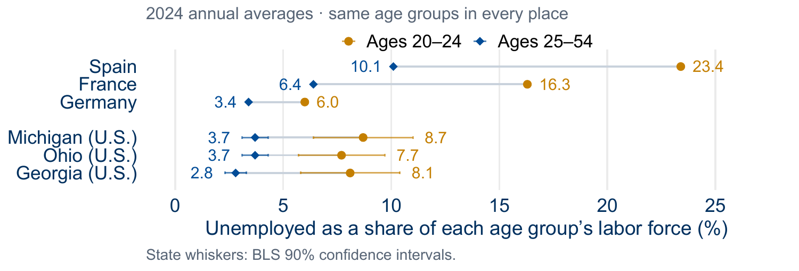
Compare ages 20–24 with ages 25–54 within a place. Then compare the same age group across places. U.S. state intervals overlap, so small differences in their point estimates do not establish a precise ranking.
Connect to the concept: Group-specific unemployment rates need group-specific labor-force denominators.
In this chart, what is the denominator for unemployment among ages 20–24?
Answer: C. Employed plus unemployed people aged 20–24.
The age-group labor force includes employed and unemployed people of that age. Nonparticipants are excluded.
| place | geography | year | age | rate | lower | upper |
|---|---|---|---|---|---|---|
| Germany | Country | 2024 | 20-24 | 6.0 | ||
| Spain | Country | 2024 | 20-24 | 23.4 | ||
| France | Country | 2024 | 20-24 | 16.3 | ||
| Germany | Country | 2024 | 25-54 | 3.4 | ||
| Spain | Country | 2024 | 25-54 | 10.1 | ||
| France | Country | 2024 | 25-54 | 6.4 | ||
| Michigan | U.S. state | 2024 | 20-24 | 8.7 | 6.4 | 11.0 |
| Ohio | U.S. state | 2024 | 20-24 | 7.7 | 5.7 | 9.7 |
| Georgia | U.S. state | 2024 | 20-24 | 8.1 | 5.8 | 10.4 |
| Michigan | U.S. state | 2024 | 25-54 | 3.7 | 3.1 | 4.3 |
| Ohio | U.S. state | 2024 | 25-54 | 3.7 | 3.1 | 4.3 |
| Georgia | U.S. state | 2024 | 25-54 | 2.8 | 2.3 | 3.3 |
Connect with: Measuring U.S. unemployment · Unemployment support across countries
Labor markets · December 2025; separate 2019/2020 gap illustration
The measurement tutorial begins by classifying people, then uses BLS counts to calculate unemployment, participation, and employment relative to population. These measures answer different questions. Optional material explains broader underutilization and why a natural-rate benchmark must be estimated rather than read directly from a survey table.
For the tutorial’s unadjusted December 2025 figures, divide 7,003 thousand unemployed by a 170,723 thousand labor force to obtain about 4.1%. Participation and employment-population ratios instead use 274,816 thousand people as the denominator.
The supplied classroom duration figure uses seasonally adjusted values; the recording’s worked calculations use unadjusted values. The natural-rate benchmark is CBO’s noncyclical estimate. The recording’s additional material is optional after its separate scope slide.
Connect to the concept: The numerator and denominator must refer to the same population and data treatment.
Which formula calculates the unemployment rate?
Answer: D. Unemployed / labor force × 100.
Unemployment is a share of the labor force. The other formulas either measure a different concept or use the wrong denominator.
unemployment, slide 9; unemployment, slide 10; unemployment, slide 11; unemployment, slide 19; unemployment, slide 26; unemployment, slide 28; tutorial, slide 4; tutorial, slide 5; tutorial, slide 6; tutorial, slide 7; tutorial, slide 8; tutorial, slide 15; tutorial, slide 16; tutorial, slide 18
| measure | value | units | adjustment |
|---|---|---|---|
| population | 274816 | Thousands of people | Not seasonally adjusted |
| labor_force | 170723 | Thousands of people | Not seasonally adjusted |
| employed | 163720 | Thousands of people | Not seasonally adjusted |
| unemployed | 7003 | Thousands of people | Not seasonally adjusted |
| not_in_labor_force | 104094 | Thousands of people | Not seasonally adjusted |
Connect with: Young adults in Georgia, Michigan, Ohio, and Europe · Where do U.S. factory workers go?
Growth · History 1980–2020; population scenario 2023–2060; growth scenario 2024–2060
The ageing opening places a historical comparison beside conditional projections. Working-age population is one influence on the economy, but it is not employment, total population, or productivity. The production-function discussion helps explain why fewer potential workers do not mechanically imply less output per person.
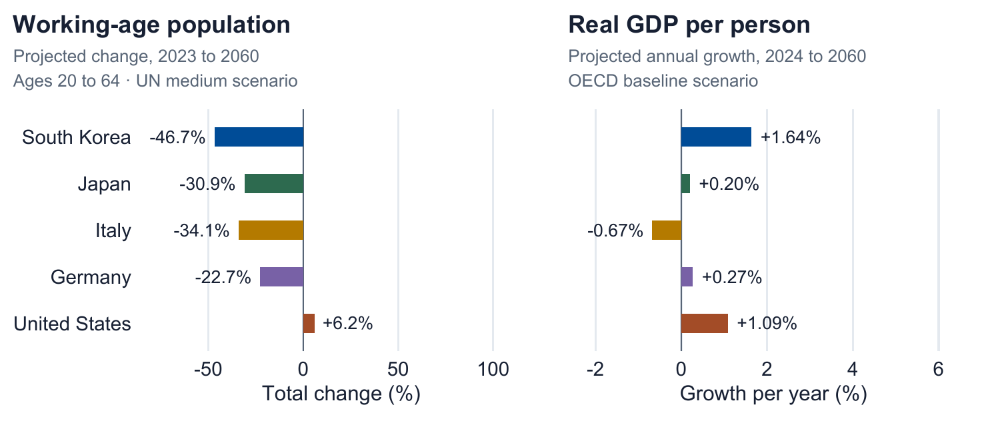
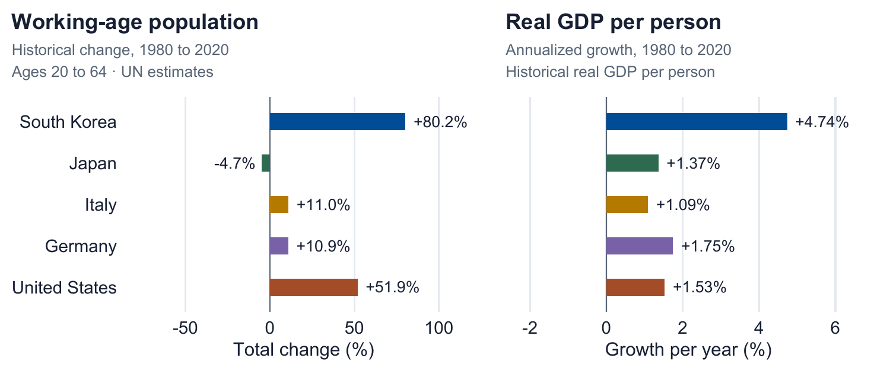
The population panel reports a total percentage change; the GDP panel reports average annual growth. History and projections use different periods and sources. OECD projections preserve assumptions about productivity and labor-market entry and exit.
OECD baseline: working-age population uses the UN medium scenario; age- and gender-specific entry and exit rates stay constant. Productivity follows the historical GDP-per-worker growth benchmark (2006–2019, or 2007–2019 for Korea). These are conditional scenarios, not ageing-only causal estimates.
Connect to the concept: Output per person depends on productivity and the employed share of the population.
A country’s working-age population shrinks. Which conclusion follows without further assumptions?
Answer: A. The change alone does not determine GDP-per-person growth.
Productivity, employment, and the total population also matter. The demographic change alone is not enough to determine GDP per person.
| country | code | working age change percent | projected gdp per person growth percent | historical gdp per worker growth percent | productivity reference period | population period | growth period | population age range | population scenario | growth scenario | population cell | growth cell |
|---|---|---|---|---|---|---|---|---|---|---|---|---|
| South Korea | KOR | -46.71653 | 1.637102 | 2.062123 | 2007-2019 | 2023-2060 | 2024-2060 | 20-64 | UN WPP 2024 medium | OECD baseline | g2-3!C24 | g2-7!D54 |
| Japan | JPN | -30.94853 | 0.1976087 | 0.2355054 | 2006-2019 | 2023-2060 | 2024-2060 | 20-64 | UN WPP 2024 medium | OECD baseline | g2-3!C31 | g2-7!D37 |
| Italy | ITA | -34.05239 | -0.6747196 | -0.309662 | 2006-2019 | 2023-2060 | 2024-2060 | 20-64 | UN WPP 2024 medium | OECD baseline | g2-3!C28 | g2-7!D38 |
| Germany | DEU | -22.68052 | 0.2703277 | 0.5266213 | 2006-2019 | 2023-2060 | 2024-2060 | 20-64 | UN WPP 2024 medium | OECD baseline | g2-3!C38 | g2-7!D53 |
| United States | USA | 6.191335 | 1.085747 | 1.109625 | 2006-2019 | 2023-2060 | 2024-2060 | 20-64 | UN WPP 2024 medium | OECD baseline | g2-3!C58 | g2-7!D25 |
| country | code | population 20 64 1980 | population 20 64 2020 | working age change percent | gdp per person 1980 | gdp per person 2020 | annualized gdp per person growth percent | population period | growth period | population age range | gdp unit |
|---|---|---|---|---|---|---|---|---|---|---|---|
| South Korea | KOR | 19327704 | 34833748 | 80.22703576172316 | 6064.04 | 38606.984 | 4.736388715019465 | 1980-2020 | 1980-2020 | 20-64 | 2011 international dollars |
| Japan | JPN | 71863408 | 68455172 | -4.74265846117401 | 21404.0 | 36826.64 | 1.365852885119918 | 1980-2020 | 1980-2020 | 20-64 | 2011 international dollars |
| Italy | ITA | 31841653 | 35348976 | 11.014889836278297 | 20959.0 | 32385.326 | 1.0937817047605434 | 1980-2020 | 1980-2020 | 20-64 | 2011 international dollars |
| Germany | DEU | 45010802 | 49926311 | 10.920731872318123 | 22497.0 | 44996.43 | 1.7481065847273183 | 1980-2020 | 1980-2020 | 20-64 | 2011 international dollars |
| United States | USA | 131870955 | 200290778 | 51.88392167175857 | 29611.0 | 54379.207 | 1.531194328811866 | 1980-2020 | 1980-2020 | 20-64 | 2011 international dollars |
Connect with: AI and the production function · East Asia, Latin America, and Africa
Growth · Published workplace study 2025; macro scenarios 2024
AI can affect several parts of production. Servers add physical capital; training builds human capital; better methods can raise the effectiveness of existing inputs. The workplace study in class reports gains in a particular workflow. Translating that evidence into aggregate growth requires assumptions about exposure, adoption, complementary investment, and costs.
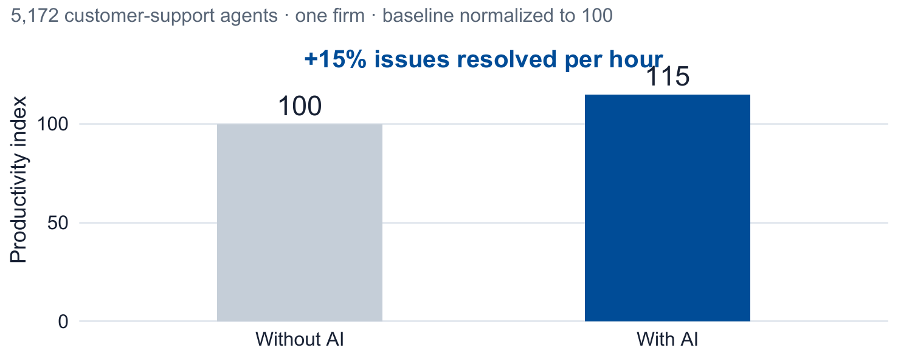
The graph uses an index of 100 without assistance and 115 with it, based on the published estimated effect. The two numbers are constructed index values, not raw means for national output. The macroeconomic scenario is separate evidence.
Connect to the concept: A gain in one task is not automatically the same percentage gain in GDP.
Why can’t a 15% productivity gain in one workflow be applied directly to all GDP?
Answer: B. The economy includes other tasks, and adoption and complementary inputs vary.
Aggregate effects depend on the activities affected, adoption, investment, and costs; the result is not a universal economy-wide treatment effect.
growth1, slide 15; growth1, slide 16; growth1, slide 17; growth1, slide 18; growth1, slide 20
| condition | productivity index | interpretation |
|---|---|---|
| Without AI | 100 | Normalized baseline |
| With AI | 115 | Baseline times 1.15; published estimated effect |
Connect with: Public investment: China and the U.S. Internet · Natural resources and sustainable growth
Growth · Historical GDP comparison; 1930 rupture; 1998–2002 contraction
Argentina’s history separates long-run divergence from a particular crisis. Output per person can rise while a country loses ground relative to peers. The class connects investment, education, technology, institutions, trade, and external finance to the production function, then uses the 2001–02 collapse to examine more immediate vulnerabilities.
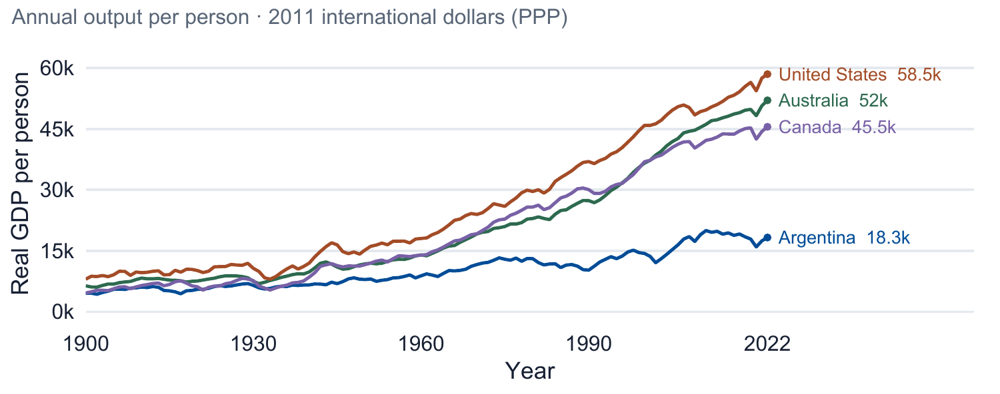
Compare levels and relative paths in the historical series. The graph documents divergence; it does not assign a percentage of the outcome to each explanation. Extended papers examine overlapping mechanisms and belong in optional reading.
Connect to the concept: Relative decline can coexist with absolute improvement.
Argentina’s GDP per person rises, but its ratio to U.S. GDP per person falls. What does that mean?
Answer: C. Argentina grew more slowly than the U.S. over the interval.
A falling ratio with a rising numerator means the comparator grew faster over the interval.
| country | code | year | gdp per person |
|---|---|---|---|
| Argentina | ARG | 1900 | 4583.0 |
| Argentina | ARG | 1901 | 4591.0 |
| Argentina | ARG | 1902 | 4331.0 |
| Argentina | ARG | 1903 | 4769.0 |
| Argentina | ARG | 1904 | 5086.0 |
| Argentina | ARG | 1905 | 5545.0 |
| Argentina | ARG | 1906 | 5608.0 |
| Argentina | ARG | 1907 | 5514.0 |
| Argentina | ARG | 1908 | 5829.0 |
| Argentina | ARG | 1909 | 5896.0 |
| Argentina | ARG | 1910 | 6092.0 |
| Argentina | ARG | 1911 | 5971.0 |
Showing the first 12 of 492 observations. Download the CSV for the full selected series.
Campante & Glaeser: Buenos Aires and Chicago
A historical comparison of education, industrial capital, and urban development; not proof that education alone explains national divergence.
Brambilla, Galiani & Porto: Argentine trade policy
Trade barriers and export taxation as mechanisms affecting investment and productivity.
Galiani & Somaini: Path-dependent import substitution
Why groups with investments in protected activities may defend a policy over time.
Spruk: The Rise and Fall of Argentina
A counterfactual approach to institutional changes, including the 1930 coup; results depend on comparison and identification assumptions.
Calvo, Izquierdo & Talvi: Sudden stops and dollar debt
External financing and balance-sheet vulnerabilities in the 2001 crisis.
Taylor: The Argentina Paradox
An overview of investment, trade, financial frictions, and deeper explanations.
Gluzmann & Sturzenegger: CPI measurement in Argentina
A measurement challenge: different estimates of price change alter estimates of real-income growth.
Connect with: Argentina: the 1989 inflation episode · East Asia, Latin America, and Africa
Living standards · 2022 survey/distribution; March 2026 vintage
The U.S. income-group figure places the mean of each national decile within a global distribution. It shows how the reference group changes our interpretation of income. It also preserves variation within U.S. groups: the average of the lowest decile is not the income or global position of every person in that decile.
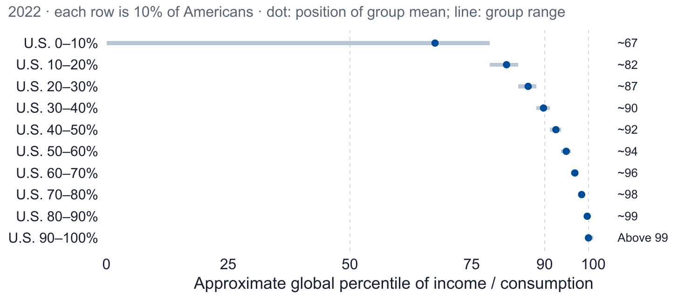
A dot represents the global position of a group mean; the interval describes the span associated with its boundaries. Values above the resolved upper tail are grouped rather than assigned invented exact ranks. These are income/consumption comparisons, not wealth positions.
Connect to the concept: The rank of a group’s mean does not identify every member’s rank.
What does a dot for a U.S. decile represent here?
Answer: D. The global position of that decile’s mean income.
The dot ranks a group mean. It is not a statement that all members occupy that position, and it does not measure wealth.
| decile | us group | mean daily | mean annual | lower daily | upper daily | global rank at mean | global rank label | global rank lower | global rank upper | upper above 99 |
|---|---|---|---|---|---|---|---|---|---|---|
| 1 | 0–10% | 15.239075770974159 | 5562.262656405568 | 0.0 | 25.129627227783203 | 67.48046589120781 | About percentile 67 | 0.0 | 78.74262610175221 | False |
| 2 | 10–20% | 30.50505256652832 | 11134.344186782837 | 25.129627227783203 | 35.57548522949219 | 82.17165503198113 | About percentile 82 | 78.74262610175221 | 84.59044655718813 | False |
| 3 | 20–30% | 40.6486156463623 | 14836.74471092224 | 35.57548522949219 | 45.63943099975586 | 86.60942182105808 | About percentile 87 | 84.59044655718813 | 88.28028741849823 | False |
| 4 | 30–40% | 50.72856407165527 | 18515.925886154175 | 45.63943099975586 | 55.917755126953125 | 89.76321705904104 | About percentile 90 | 88.28028741849823 | 91.05963620552704 | False |
| 5 | 40–50% | 61.754525375366214 | 22540.401762008667 | 55.917755126953125 | 67.7236099243164 | 92.30835498728767 | About percentile 92 | 91.05963620552704 | 93.39301471188134 | False |
| 6 | 50–60% | 74.57743530273437 | 27220.763885498047 | 67.7236099243164 | 81.85527801513672 | 94.42928503486486 | About percentile 94 | 93.39301471188134 | 95.33783590971123 | False |
| 7 | 60–70% | 90.4157730102539 | 33001.757148742676 | 81.85527801513672 | 99.61293029785156 | 96.2054575644755 | About percentile 96 | 95.33783590971123 | 96.94901976023232 | False |
| 8 | 70–80% | 111.63135375976563 | 40745.44412231445 | 99.61293029785156 | 125.23594665527344 | 97.59807166949683 | About percentile 98 | 96.94901976023232 | 98.16522591518414 | False |
| 9 | 80–90% | 145.9441925048828 | 53269.63026428223 | 125.23594665527344 | 172.98831176757812 | 98.74012953737167 | About percentile 99 | 98.16522591518414 | 99.0 | True |
| 10 | 90–100% | 278.05114593505857 | 101488.66826629637 | 172.98831176757812 | 99.0 | Above 99th | 99.0 | 100.0 | True |
Connect with: Georgia benchmarks and country income distributions · Output, debt, and life expectancy across countries
Living standards · 2022; 2021 PPP dollars per person per day
The cross-country distribution chart compares national percentile cutoffs and two Georgia-related reference amounts. It distinguishes income from consumption and treats the Georgia amounts as context. The mean personal-income figure is not a typical salary, and the national poverty threshold is not the average income of Georgians in poverty.
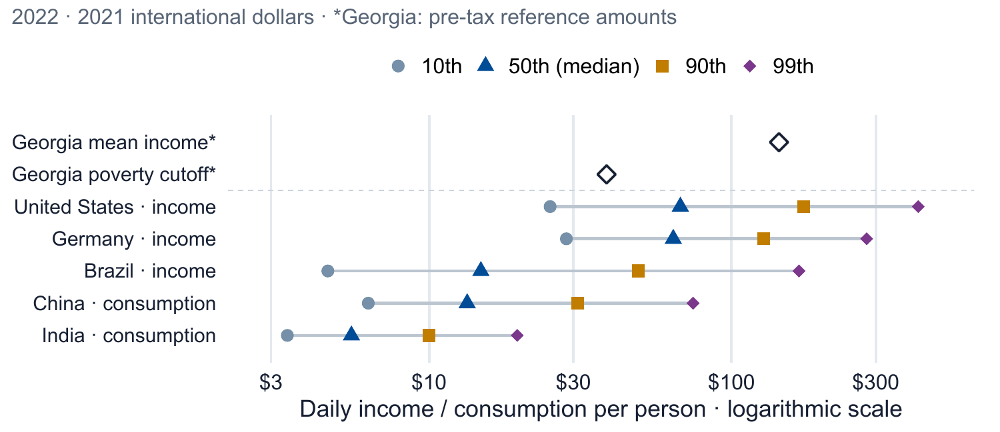
Read percentile symbols along the logarithmic daily-dollar axis. The 90th percentile is the cutoff entering the highest tenth, not that tenth’s average. Georgia’s pretax benchmarks differ from the survey welfare measures, so exact global ranks are not assigned to them.
U.S., German, and Brazilian survey values are income; China and India measure consumption. Georgia’s reference amounts are pretax and use other definitions. The comparison uses 2021 PPP dollars per person per day, and does not assign the Georgia references exact world ranks.
Connect to the concept: A common currency unit does not erase differences in what is being measured.
What is the 90th-percentile value in the country distribution chart?
Answer: A. A cutoff at which 90% of the distribution is at or below that value.
A percentile is a cutoff. It is neither a group mean nor a wealth measure.
| country | year | ppp version | welfare type | reporting level | percentile | country code | avg | share | thr | pop |
|---|---|---|---|---|---|---|---|---|---|---|
| Brazil | 2022 | 2021 | income | national | 10 | BRA | 4.48469877243042 | 0.18480861326679587 | 4.625301361083984 | 2103064.25 |
| Brazil | 2022 | 2021 | income | national | 50 | BRA | 14.721363067626953 | 0.606648251414299 | 14.832871437072754 | 2103064.25 |
| Brazil | 2022 | 2021 | income | national | 90 | BRA | 47.630882263183594 | 1.9628068432211876 | 49.11759567260742 | 2103064.25 |
| Brazil | 2022 | 2021 | income | national | 99 | BRA | 140.54638671875 | 5.791734158992767 | 167.12278747558594 | 2103064.25 |
| China | 2022 | 2021 | consumption | national | 10 | CHN | 6.201693058013916 | 0.3624750068411231 | 6.293736934661865 | 14121750.0 |
| China | 2022 | 2021 | consumption | national | 50 | CHN | 13.261112213134766 | 0.7750821299850941 | 13.363155364990234 | 14121750.0 |
| China | 2022 | 2021 | consumption | national | 90 | CHN | 30.406055450439453 | 1.7771655693650246 | 31.035911560058594 | 14121750.0 |
| China | 2022 | 2021 | consumption | national | 99 | CHN | 65.60140228271484 | 3.8342542946338654 | 74.60707092285156 | 14121750.0 |
| Germany | 2022 | 2021 | income | national | 10 | DEU | 27.488311767578125 | 0.36245358642190695 | 28.437618255615234 | 831778.125 |
| Germany | 2022 | 2021 | income | national | 50 | DEU | 63.82918930053711 | 0.841634813696146 | 64.17733764648438 | 831778.125 |
| Germany | 2022 | 2021 | income | national | 90 | DEU | 125.9426040649414 | 1.6606459394097328 | 127.85857391357422 | 831778.125 |
| Germany | 2022 | 2021 | income | national | 99 | DEU | 240.02854919433594 | 3.1649529933929443 | 279.8145446777344 | 831778.125 |
Showing the first 12 of 20 observations. Download the CSV for the full selected series.
| label | annual 2022 usd | source | daily 2021 usd |
|---|---|---|---|
| Georgia mean personal income | 56589.0 | BEA, May 2024, table 1 | 143.55030422164288 |
| Single adult poverty threshold | 15225.0 | Census 2022, under age 65, no children | 38.62152329559654 |
Connect with: U.S. income groups in the world · Young adults in Georgia, Michigan, Ohio, and Europe
Institutions · Chapter examples; ARPANET 1969; NSFNET 1986
The chapter’s public-support examples connect policy to production. Infrastructure helps productive activity connect; education builds skills; research can improve methods. China illustrates the first two channels, while U.S. ARPANET and NSFNET support provides a dated example of publicly supported research and networking.
Match each policy to physical capital, human capital, or productive methods. These examples include public provision and funding under the chapter’s broad subsidy heading; they are not all cash transfers to private firms.
Connect to the concept: Direct support can build inputs or make new methods possible.
Which policy most directly builds human capital?
Answer: B. Funding education and training.
Education and training build workers’ skills. Bridges and equipment are physical capital.
growth2, slide 8
Connect with: AI and the production function · Indonesia: auditing public projects
Institutions · Titling program 1996–2003; survey March 2000
The Peru example connects secure property rights with household decisions. Titling can change the time and effort needed to protect a claim, which may change work choices. The study’s outcome is household labor supply, offering evidence about an institutional mechanism without claiming to measure the whole country’s growth response.
The evidence is quasi-experimental and tied to a particular titling program and survey. It is different from a randomized experiment and from a national time-series comparison.
Connect to the concept: Name the outcome and the type of evidence before generalizing.
The Peru study discussed in class primarily informs which outcome?
Answer: C. Household labor supply associated with a titling program.
The study examines household labor supply in a specific titling setting. A national growth claim would require additional evidence.
Connect with: Botswana: political stability and investment · Indonesia: auditing public projects
Institutions · After independence in 1966
Botswana offers a historical account of political stability and investment after independence. Predictable rules and capable implementation can influence the returns people expect from long-lived investments. The account is useful for thinking about incentives, while its historical nature limits how precisely a single institution’s contribution can be isolated.
Read the case as a historical interpretation. It does not assign countries randomly to institutions and does not establish that resource abundance or one policy guarantees prosperity.
Connect to the concept: Institutions shape investment incentives and implementation.
What kind of evidence is the Botswana account used in class?
Answer: D. A historical interpretation of institutions and development.
The account organizes historical evidence and mechanisms. It does not isolate a randomized treatment effect.
Connect with: Peru: property rights and work · East Asia, Latin America, and Africa
Institutions · 2003–04; published 2007
Indonesia’s road-project study tests a concrete governance mechanism: stronger external oversight. Random assignment of higher audit probability allows a more direct causal comparison than a broad cross-country correlation. The measured outcome is unaccounted-for project spending, using independent estimates of construction costs.
Distinguish the intervention—higher audit probability—from the measured spending discrepancy. A reduction in missing expenditure is not itself a national GDP estimate or a measure of every form of corruption.
Connect to the concept: A credible causal design still applies to a specific intervention and outcome.
What outcome did the audit study directly measure?
Answer: A. Discrepancies between reported spending and independently estimated project costs.
The study evaluates missing project expenditure using independent cost estimates. Broader outcomes require additional evidence.
Connect with: Public investment: China and the U.S. Internet · Peru: property rights and work
Growth · 1960–2024 comparison; historical regional explanations
The book’s regional comparison connects South Korea, Argentina, and Nigeria to different growth experiences. The following explanations emphasize investment, basic education, adoption of technology, policy instability, conflict, and geography. Each country is a useful example, but no single national path represents every economy in its region.
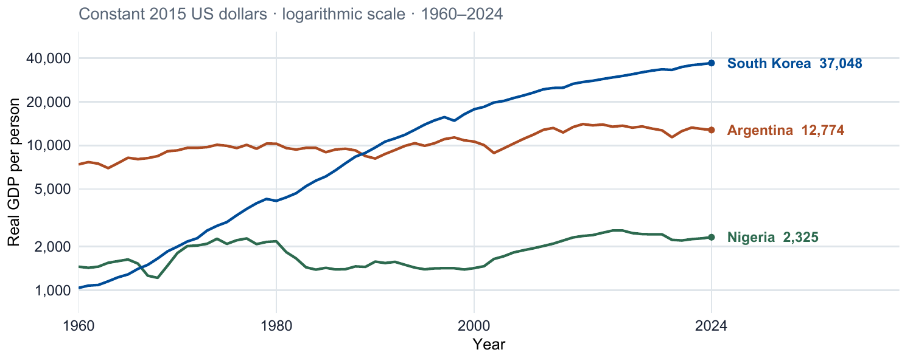
The vertical axis is logarithmic: equal vertical distances represent equal ratios. The series is real GDP per person in constant 2015 U.S. dollars. It is useful for growth paths, but its levels do not fully adjust for international cost-of-living differences.
Connect to the concept: Sustained growth depends on productive inputs, methods, and the conditions supporting them.
On a logarithmic GDP-per-person axis, equal vertical distances represent what?
Answer: B. Equal proportional changes.
A logarithmic scale shows ratios: the same vertical distance corresponds to the same proportional change.
growth2, slide 11; growth2, slide 12; growth2, slide 13; growth2, slide 14
| country | iso3 | year | real gdp per person |
|---|---|---|---|
| Argentina | ARG | 1960 | 7397.10965495682 |
| Argentina | ARG | 1961 | 7670.59545571641 |
| Argentina | ARG | 1962 | 7480.27172420174 |
| Argentina | ARG | 1963 | 6967.75019555221 |
| Argentina | ARG | 1964 | 7551.02490778789 |
| Argentina | ARG | 1965 | 8219.55155637229 |
| Argentina | ARG | 1966 | 8041.22487411475 |
| Argentina | ARG | 1967 | 8172.27456469042 |
| Argentina | ARG | 1968 | 8436.30856351031 |
| Argentina | ARG | 1969 | 9111.9459748551 |
| Argentina | ARG | 1970 | 9244.12251785153 |
| Argentina | ARG | 1971 | 9614.61061692134 |
Showing the first 12 of 195 observations. Download the CSV for the full selected series.
Connect with: Argentina: long-run divergence and crisis · Population ageing and future growth
Sustainability · Conceptual local/global distinction
Other things equal, more production puts additional pressure on resources and the environment. Local pollution concentrates many costs and benefits in one area, while greenhouse-gas effects cross borders. That distinction helps explain why environmental policy involves both local enforcement and difficult international coordination.
The local/global distinction is conceptual, not a map of specific polluted cities. Local harm does not mean polluters and victims are the same people. Cleaner technology, incentives, and institutions can change the relationship between output and damage.
Connect to the concept: Global external costs add an international cooperation problem.
Why is international climate coordination difficult?
Answer: C. Countries can benefit from others’ reductions while differing in priorities and commitments.
Cross-border benefits create incentives to rely on others, while governments face different costs, priorities, and commitments.
Connect with: Natural resources and sustainable growth · AI and the production function
Sustainability · Malthus 1798; later resource-limit warnings
Malthus expected population pressure on limited land to keep living standards low. Sustained technological progress helped productivity rise instead. Later resource warnings ask whether growth can continue with finite supplies. Scarcity can encourage conservation, more efficient use, and substitutes, although those responses do not guarantee a costless solution to every constraint.
Separate the historical prediction from the economic mechanism. Higher resource prices create incentives to adapt, but unpriced environmental harm may remain. Resource warnings are not all identical forecasts with the same assumptions or deadline.
Connect to the concept: Innovation and price incentives can change how resources are used.
What response does a higher resource price encourage, other things equal?
Answer: D. Conservation, efficiency, and development of substitutes.
Higher prices reward economizing on a scarce input and finding alternatives. They do not automatically eliminate environmental externalities.
Connect with: Growth and environmental costs · Wakanda: scarcity, opportunity cost, and trade
Growth · 1913–2020 historical comparisons
The early growth comparison extended the production-possibilities discussion across countries and decades. It showed that economies can start at different income levels and follow very different paths. This provides a bridge from a model of productive capacity to the later chapter’s questions about productivity and living standards.
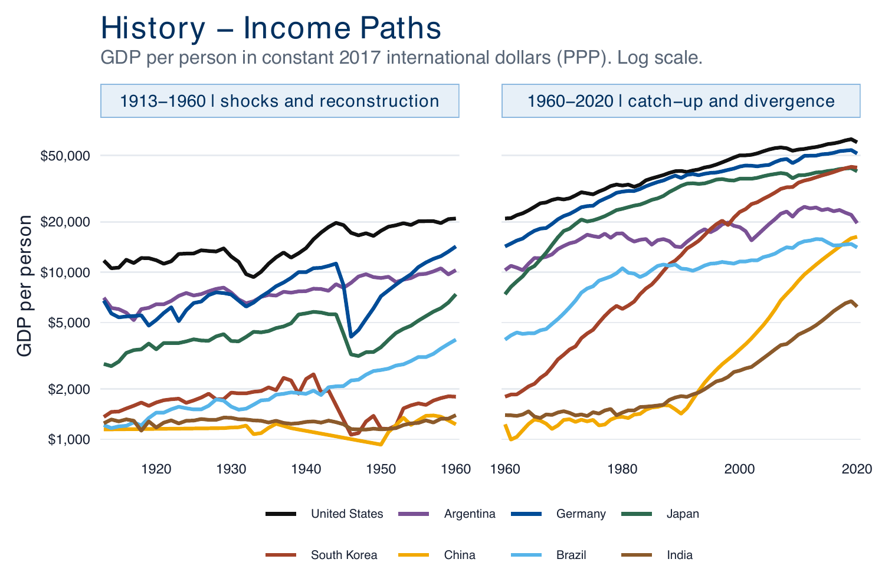
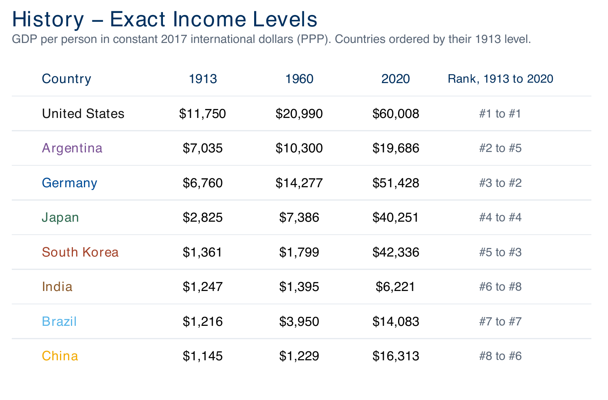
The historical estimates use constant 2017 international dollars. Keep that price and PPP basis separate from later Maddison and World Bank charts. A steeper long-run path needs an explanation; the line alone does not identify its cause.
Connect to the concept: Growth changes productive possibilities over time.
What would represent growth in productive capacity in a PPF model?
Answer: A. An outward shift of the frontier.
An outward shift permits more feasible output combinations. Movement along a fixed frontier reallocates existing capacity.
| geo | time | income per person gdppercapita ppp inflation adjusted |
|---|---|---|
| arg | 1913 | 7035 |
| arg | 1914 | 6118 |
| arg | 1915 | 6011 |
| arg | 1916 | 5727 |
| arg | 1917 | 5169 |
| arg | 1918 | 6018 |
| arg | 1919 | 6127 |
| arg | 1920 | 6435 |
| arg | 1921 | 6432 |
| arg | 1922 | 6738 |
| arg | 1923 | 7222 |
| arg | 1924 | 7514 |
Showing the first 12 of 864 observations. Download the CSV for the full selected series.
Connect with: Wakanda: scarcity, opportunity cost, and trade · Argentina: long-run divergence and crisis
Course material through September 24, 2026. Data retain their original observation dates and sources. World map: Natural Earth via world-atlas. U.S. map: Census boundaries via us-atlas. Maps are navigation aids using present-day boundaries.
{kind=link}
{kind=link}
{kind=link}
{kind=link}
{kind=link}
{kind=link}
{kind=link}
{kind=link}
{kind=link}
{kind=link}
{kind=link}
{kind=link}
{kind=link}
{kind=link}
{kind=link}
{kind=link}
{kind=link}
{kind=link}
{kind=link}
{kind=link}
{kind=link}
{kind=link}
{kind=link}
{kind=link}
{kind=link}
{kind=link}
{kind=link}
{kind=link}